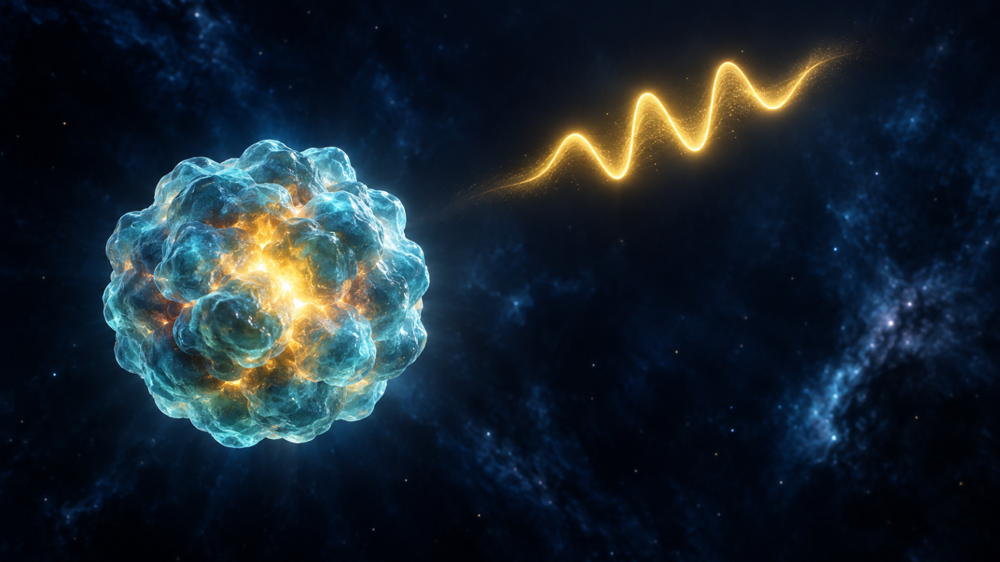
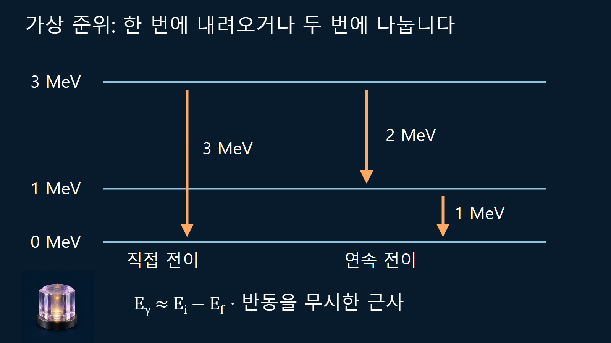
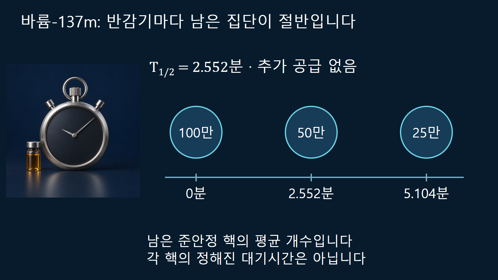

원자와 원자핵의 기초 · 018
핵의 들뜬상태
에너지를 흡수한 원자핵이 불연속 준위를 거쳐 안정 상태로 돌아오는 과정

같은 양성자수와 중성자수를 가진 원자핵에도 여러 내부 에너지 상태가 있습니다. 가장 낮은 상태가 바닥상태이며, 그보다 높은 상태가 들뜬상태입니다. 핵이 들떴다는 것은 원소 이름이나 질량수가 반드시 바뀌었다는 뜻이 아닙니다. 어떤 상태에서 어떤 상태로 내려왔는지가 방출 에너지를 결정합니다.
같은 핵종에서 내부 에너지 기준을 정합니다
핵종은 Z와 N으로 구분하지만 이 두 숫자만으로 내부 상태까지 완전히 지정하지는 못합니다. 들뜬에너지 Ex는 해당 핵종의 바닥상태 에너지와의 차이입니다. 준위도에서 바닥상태를 0으로 놓는 것은 기준을 정한 것이며 핵의 질량에너지가 사라진다는 뜻은 아닙니다. 들뜬상태에는 자체의 스핀·패리티와 수명이 있으며, 단일 핵자의 재배치뿐 아니라 여러 핵자의 집단 운동이 기여할 수도 있습니다.
전자 들뜸과 핵 들뜸을 구별하는 질문
원자가 빛을 흡수해 전자 상태가 바뀌는 경우와 원자핵의 내부 상태가 바뀌는 경우는 다릅니다. 일반적인 원자 전자 전이는 eV 규모, 많은 핵 전이는 keV에서 MeV 규모로 설명하지만 에너지 범위만으로 모든 광자의 기원을 판정하지는 않습니다. 특성 X선은 전자껍질의 빈자리가 채워질 때, 감마선은 핵의 전이에서 발생합니다. 핵의 내부전환 뒤에 전자껍질이 다시 정리되면서 X선이 함께 나올 수도 있어 검출된 광자들을 모두 동일한 핵 전이로 묶으면 안 됩니다.
두 준위의 차이를 읽는 계산 예시
가상의 핵에 바닥상태 0 MeV와 들뜬상태 1 MeV, 3 MeV가 있다고 가정합니다. 3 MeV에서 1 MeV로 내려오면 전이 에너지는 2 MeV이며, 이어 1 MeV에서 0으로 내려오면 1 MeV입니다. 이 연속 전이를 거친 한 사건에서는 2 MeV와 1 MeV의 광자 두 개가 나올 수 있습니다. 만약 3 MeV에서 0으로 직접 내려가는 전이가 허용되고 실제로 일어나면 약 3 MeV의 광자 하나가 나옵니다. 두 경로는 가능한 경로를 비교하는 교육용 가정이며 특정 실재 핵종의 분기율을 나타내지 않습니다.
방출 직전 핵이 정지해 있다면 전이 에너지는 광자 에너지와 딸상태 핵의 반동 운동에너지로 나뉩니다. 따라서 Eγ≈Ei−Ef는 반동을 무시한 근사입니다. 여기서는 MeV 단위의 큰 차이를 읽는 목적이므로 이 근사를 사용합니다. 정밀 감마선 에너지나 공명 조건을 다룰 때에는 반동과 운동에 따른 에너지 변화를 포함해야 합니다.

낮은 준위로 가는 방식은 감마선만이 아닙니다
핵은 감마선을 방출하거나 내부전환으로 에너지를 잃을 수 있습니다. 내부전환에서는 핵의 전이 에너지가 원자 전자에 직접 전달되어 전자가 방출됩니다. 이는 먼저 감마선이 만들어진 뒤 같은 원자에서 흡수되는 두 단계 과정으로 정의하지 않습니다. 전자 운동에너지는 대략 전이 에너지에서 해당 전자의 결합에너지를 뺀 값이며, 남은 전자껍질 빈자리는 특성 X선이나 오제전자 방출로 정리될 수 있습니다. 더 높은 들뜬상태에서는 핵자 분리에너지를 넘으면 입자 방출도 경쟁할 수 있으므로, 모든 상태가 반드시 감마선만 내고 원래 핵종에 남는다고 가정하지 않습니다.
| 상태 변화 | 주요 방출물 | 자료에서 확인할 구분 |
|---|---|---|
| 핵 감마전이 | 광자와 핵 반동 | 처음·나중 준위와 감마선 세기 |
| 내부전환 | 원자 전자 | 전이 에너지와 전자 결합에너지 |
| 전자껍질 이완 | 특성 X선·오제전자 | 핵 준위차와 다른 전자껍질 에너지 |
| 입자 방출 | 중성자·양성자 등 | 분리 문턱과 딸핵 조성 변화 |
오래 남는 들뜬상태에 붙이는 m
전이가 억제되어 비교적 오래 남는 상태를 준안정상태 또는 핵이성질체라고 부릅니다. 핵종 표기의 m은 이 상태를 구별하며, 질량수가 하나 추가됐다는 표시가 아닙니다. 수명이 길어지는 정도는 준위차뿐 아니라 스핀·패리티 변화와 전이 성질에 좌우됩니다. 모든 들뜬상태가 동일한 시간에 사라지지 않으며, 에너지가 더 높다고 언제나 더 빨리 내려오는 것도 아닙니다. 문헌의 수명이 평균수명인지 반감기인지도 확인해야 합니다.
바륨-137m으로 실제 준위와 수명을 연결합니다
바륨-137m은 Z=56, A=137이며 바륨-137 바닥상태와 양성자수·중성자수가 같습니다. 약 662 keV 위의 준안정상태이고, 반감기는 2.552분입니다. [3] 바륨-137m만 분리해 새로 공급되는 모핵이 없다고 가정하면 100만 개로 시작한 집단은 약 2.552분 뒤 평균 50만 개, 5.104분 뒤 25만 개의 준안정 핵을 남깁니다. 각 핵이 시간을 재다가 정확히 반감기에서 내려온다는 의미는 아닙니다.
대표 감마선 에너지는 661.657 keV, 방출수율은 바륨-137m 핵변환 한 번당 약 0.8974개입니다. [3] 내부전환 등이 경쟁하므로 모든 핵이 그 감마선을 하나씩 내는 것은 아닙니다. 방출 광자 수와 검출기에서 센 수 역시 효율과 측정 기하 때문에 다릅니다. 세슘-137이 계속 바륨-137m을 공급하는 시료라면 단독 지수감소 가정을 그대로 적용하지 않습니다.

피크 하나가 들뜬에너지 전체를 말하지는 않습니다
감마 스펙트럼의 전흡수 피크는 검출기에 전부 흡수된 광자의 에너지를 가리킵니다. 연속 전이에서는 처음 들뜬에너지보다 작은 여러 피크가 나타날 수 있습니다. 피크의 상대 크기에는 전이 분기, 방출수율, 검출효율이 함께 반영됩니다. 따라서 가장 높은 피크를 가장 높은 핵 준위로 바로 대응시키지 않습니다. 핵종 식별에는 여러 선의 에너지와 세기, 붕괴시간을 함께 사용합니다.
준위도를 읽는 세 가지 기준
먼저 0점이 어느 핵종의 바닥상태인지 확인합니다. 이어 화살표가 잇는 두 준위의 차이를 구하고, 전이가 허용되는 조건과 경쟁 경로를 살펴봅니다. 마지막으로 수명과 방출수율을 따로 읽습니다. 에너지차, 머무는 시간, 방출되는 입자 수를 분리해 보면 들뜬핵·준안정핵·감마선 피크를 서로 바꾸어 부르는 오류를 피할 수 있습니다.